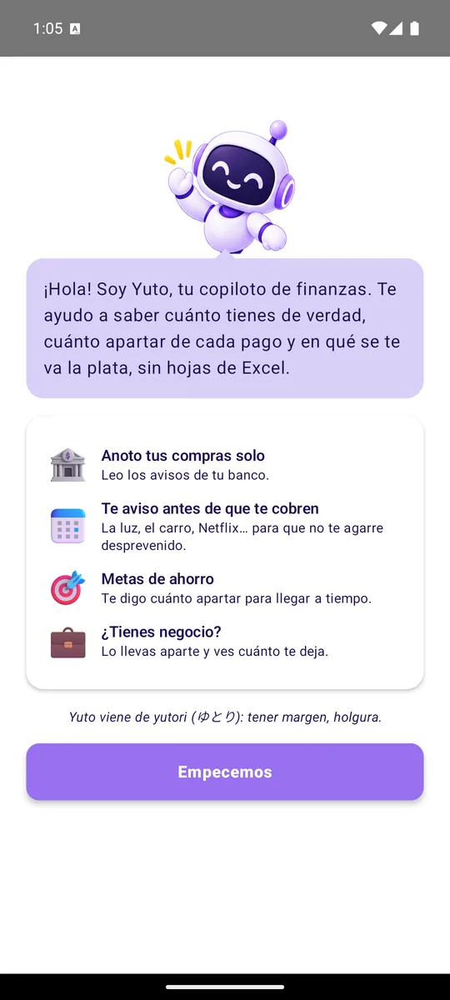
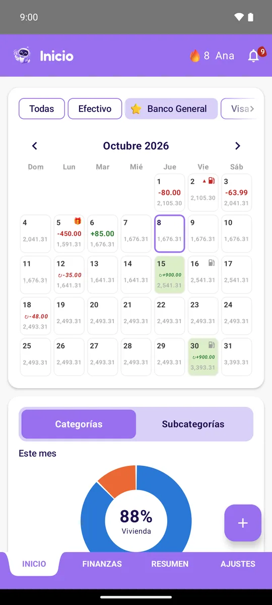
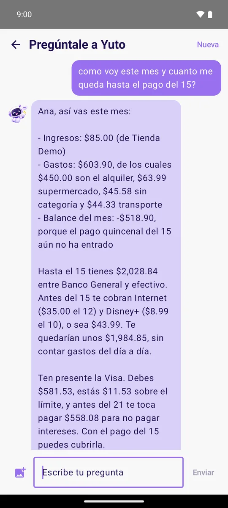
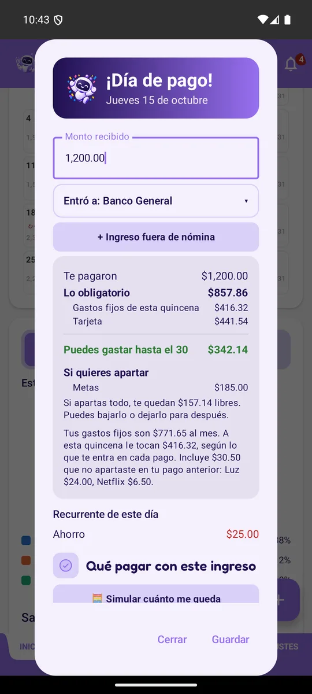
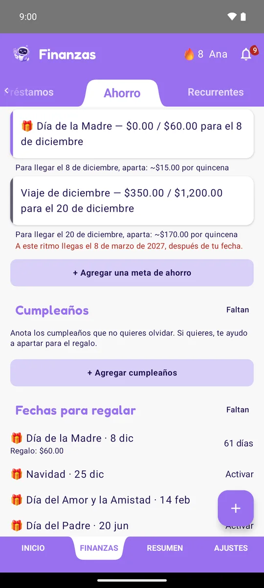
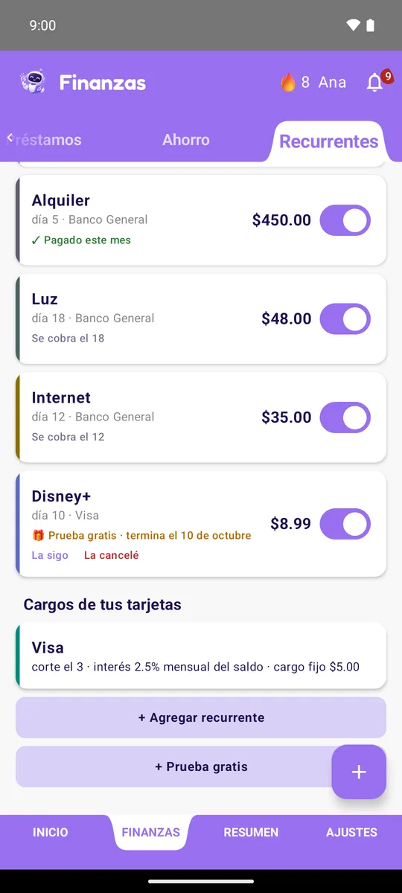
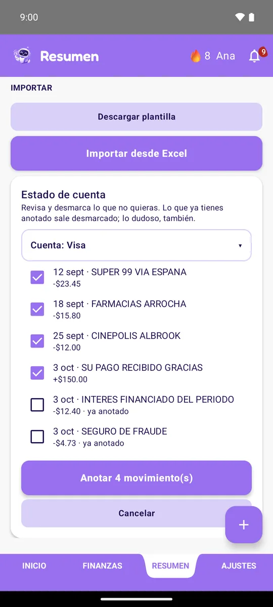
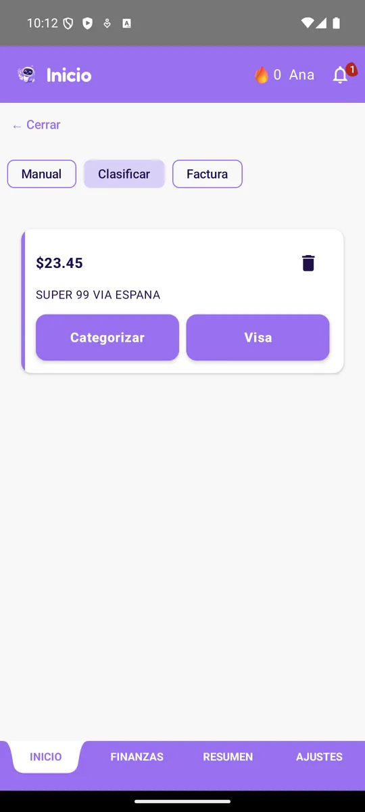

Tu copiloto de finanzas
Yuto anota tus compras solo, te avisa antes de que te cobren y te dice cuánto apartar de cada pago. Para que sepas cuánto tienes de verdad, sin hojas de Excel.
Beta abierta en Panamá, para Android 8 o superior. Los que la prueban tienen Pro gratis.
Tú sigues con tu vida. Yuto lleva la cuenta.
Lee los avisos de tu banco y anota cada compra. Los demás avisos (mensajes, redes, correos) los ignora.
¿Pagaste con Yappy o desde tu banca? Toca Compartir en el comprobante, elige Hey Yuto y la app lo lee. Sin capturas.
La luz, el carro, Netflix, las tarjetas: te recuerda el día del cobro, el corte y la fecha de pago.
Cobres por quincena, cada mes, cada dos semanas o sin fecha fija, te dice cuánto guardar para tus compromisos y cuánto te queda libre. Si no cobras lo mismo en cada quincena, reparte según lo que entra en cada una, no mitad y mitad.
Pon para qué ahorras y para cuándo, y Yuto te dice cuánto apartar para llegar a tiempo.
¿El banco te pasa plata cada semana a una cuenta que no puedes tocar hasta noviembre? Márcala como ahorro bloqueado y pon ahí mismo cuánto te pasa el banco: Yuto anota cada depósito solo, no la cuenta como plata disponible y te dice cuánto tendrás al liberarse, con el interés.
¿Empezaste a probar una suscripción? Anótala y te aviso 3 días antes y la víspera del cobro, para que decidas si la sigues o la cancelas.
Lleva lo del negocio aparte de tu plata personal y mira cuánto te deja de verdad cada mes, separando costos y gastos, y cuánto te podrías pagar de sueldo. Tiene su propia pestaña en Inicio, con sus cuentas y su calendario.
Pregúntale con tus palabras: cómo vas este mes, en qué gastaste más o si te alcanza para tu meta. Te contesta con tus números: conoce tus quincenas, tus tarjetas y tus metas, y puedes mandarle una foto del banco o de un cobro. En prueba con un grupo pequeño; pronto para todos.
Agrega tu tarjeta paso a paso. Pon los cargos que te cobra tu banco, cada uno con su ITBMS y si es mensual o una vez al año, el seguro de saldo deudor y la tasa de interés (al mes o al año): en cada corte salen para que los confirmes, y Yuto te avisa si con ellos te pasarías del límite y cuánto pagar para evitar el sobregiro.
¿Tu banco no avisa todo al celular? Importa el PDF del estado de cuenta: Yuto saca los movimientos y tú eliges cuáles anotar. Lo que ya tenías no se repite.
Te dice cómo vas a cerrar el mes en cada categoría y cuándo llegas a tu meta si sigues igual, antes de que sea tarde.
"Avísame si gasto más de $100 en restaurantes" o "si mi cuenta baja de $50". Te llega una notificación.
Anota los cumpleaños, el Día de la Madre, del Padre, Navidad o la fecha que quieras. Yuto te ayuda a apartar para el regalo y te avisa unos días antes.
Pon el widget en tu pantalla y ve cuánto te queda libre hasta tu próximo pago, tus últimos movimientos y lo que falta por cobrarte.
Crea un grupo, comparte solo las cuentas que quieras y hablen de los gastos de la casa en el mismo lugar.
¿Pasaste plata del Banco General a la BAC para pagar algo con la BAC? Yuto te sugiere la compra y quedan ligadas: la transferencia dice para qué fue y la compra, de qué cuenta salió la plata. También en cuentas compartidas.
¿Llevas tus costos y precios en Prizva? Lo que vendes y compras allá llega solo a la pestaña de tu negocio con el sello de Prizva (su P dorada), y Yuto te dice tu ganancia real: lo vendido menos lo que costó hacerlo. Si el pago llega después, se une y no se repite.








Y si no está aquí, escríbenos.
Solo los avisos de las apps de bancos y billeteras que reconoce: el monto, el comercio y la fecha. Los avisos de cualquier otra app se ignoran: no se leen ni se guardan. Puedes quitar el acceso cuando quieras desde los ajustes del teléfono.
Cada cuenta ve solo sus propios movimientos, salvo las cuentas que decidas compartir en un grupo. Nunca se guarda el número completo de tu tarjeta. Todo está explicado en la política de privacidad.
No le tomes captura: en el comprobante toca Compartir y elige Hey Yuto. La app lee el monto, a quién le pagaste y la fecha, y tú revisas antes de guardar. Si ya lo tenías anotado, te avisa.
Para contestarte usa un resumen de tus finanzas del mes y busca en tus movimientos. La conversación se guarda solo en tu teléfono; nosotros solo contamos cuántas preguntas haces al día y al mes. Más detalles en la política de privacidad.
Sí. Si tienes la letra del teléfono grande, la app se acomoda para que todo se lea sin cortarse.
Sí. En Finanzas, deja apretada una cuenta y arrástrala arriba o abajo. Ese orden se usa en toda la app, también en el calendario de Inicio. Lo mismo funciona con tus categorías, tus metas de ahorro y tus gastos fijos.
Sí. Marca esa cuenta como "Ahorro bloqueado" con la fecha en que el banco la libera, y agrega en Recurrentes el "Ahorro automático" que te pasan cada semana o quincena (de tu cuenta o del salario). Yuto lo anota solo, no lo cuenta como plata disponible y te avisa cuando se libera.
Sí: cada cargo con su ITBMS, mensual o anual, y el seguro de saldo deudor como % de lo que debes. En cada corte te los pone para confirmar.
Sí. En Inicio, deja presionado el movimiento y toca Editar: arriba está la fecha. Ahí mismo cambias el monto, la categoría o lo divides en partes.
Deja presionada la transferencia en Inicio. Yuto te sugiere la compra de la cuenta a la que pasaste la plata, del mismo día o los dos siguientes; toca "Ligar" o elige otra. Solo es para que lo veas: no cambia ningún saldo.
No. Al crear o editar un cobro anual con mes fijo eliges desde cuándo empiezas a apartar: 1, 2, 3 o 6 meses antes, o todo el año. Antes de eso no te lo pide en el día de pago; desde ahí aparta el cobro entero, repartido en esos meses.
En Finanzas → Categorías, toca la empresa y la papelera. Antes de borrarla puedes exportar su Excel. Tu plata no se mueve: sus movimientos se quedan en sus cuentas sin categoría, las cuentas del negocio pasan a personales y sus recurrentes se quedan sin categoría o en la que elijas. Si la usas en Prizva, también se borra allá; y si la borras en Prizva, Yuto te pregunta qué hacer con lo que tenía.
Va a tener dos planes, Básico y Pro, con 30 días de Pro gratis para probar. Te vamos a avisar antes; hoy todo sigue igual.
Prizva es la app para calcular costos, precios e inventario de tu negocio, con la misma cuenta de Yuto. Lo que vendes o compras allá llega solo a Yuto con ese sello. En Resumen, en tu negocio, ves cuánto te costó hacer lo vendido y tu ganancia real.
En Ajustes → Cuenta → "Cambiar contraseña": escribe la actual y la nueva dos veces. Si no te acuerdas de la actual, cierra sesión y en la pantalla de entrada toca "¿Olvidaste tu contraseña?"; te llega un correo para poner una nueva.
Toca tu día de pago (los días en verde del calendario) y, en la lista de qué pagar, toca "Simular cuánto me queda". Marca lo que piensas pagar y arriba ves cuánto te quedaría. Si todavía no te pagan, Yuto usa lo que te suele entrar en esa misma quincena (el promedio de los últimos 4 meses), así una quincena chica no se mezcla con la grande. Es solo una simulación: no se marca ni se guarda nada. Con "+ Gasto para jugar" pruebas gastos que no son cobros, como $30 de gasolina o comer afuera, y con "+ Le debo a alguien" anotas lo que te prestaron para pagarlo ese día.
No. Si en Prizva separaste lo del negocio de lo personal, cuando el banco cobra la factura entera Yuto la divide: la parte del negocio se une con la compra de Prizva y el resto queda para que le pongas tu categoría.
Toma la primera foto y, después, toca "+ Foto de lo que sigue" (o "+ De la galería") hasta 3 partes. Yuto lee la factura entera sin repetir las líneas que salen en dos fotos, y suma el ITBMS solo a los productos que la factura marca como gravados; los exentos quedan igual. Si la factura no dice cuáles son, el ITBMS queda como su propia línea y tú le pones categoría. Así lo anotado es lo mismo que te cobra el banco, sin adivinar. Un PDF de varias páginas se lee igual.
Sí. Pregúntale a Yuto, Factura y Agregar manual están siempre; con "Personalizar", al final del +, sumas hasta 3 más: transferir, pagar una deuda, categorizar pendientes, agregar una cuenta o ir directo a una pantalla.
Sí. Deja presionado el movimiento: Yuto te dice si lo leyó de un aviso del banco (y te muestra el aviso), si vino de una factura (y puedes ver la foto) o si lo anotaste a mano, cuándo y quién. Debajo ves cada cambio que se le hizo: monto, categoría, cuenta o fecha.
Por ahora solo en Android.
No. Hey Yuto es la misma app con nombre nuevo: entra con el mismo correo y contraseña y todo está ahí. Después puedes desinstalar MoneyLog.
En la app: Ajustes → Cuenta → "Eliminar mi cuenta", o escribiendo a soporte@heyyuto.com. Se borran tu cuenta y todos tus datos.
Estamos en beta en Google Play. Déjanos tu Gmail, el de tu teléfono, y te mandamos el enlace para instalarla. Los beta testers tienen Pro gratis.
Solo usamos tu correo para la beta: nada de publicidad.
Síguenos en Instagram: @heyyutoapp
Escríbenos y te respondemos. Si algo no funciona, cuéntanos qué teléfono tienes y, si puedes, manda una captura.
soporte@heyyuto.com